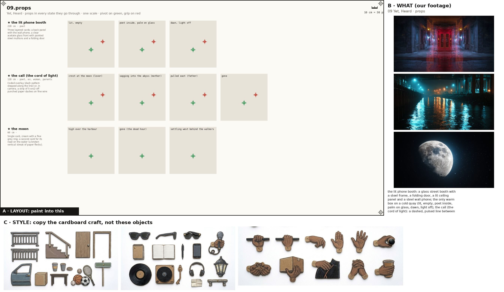
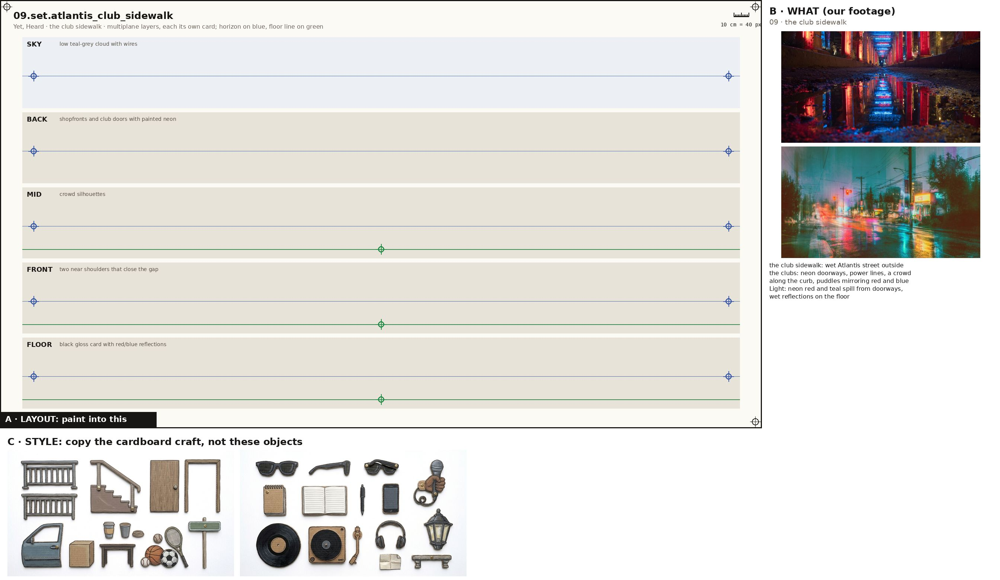
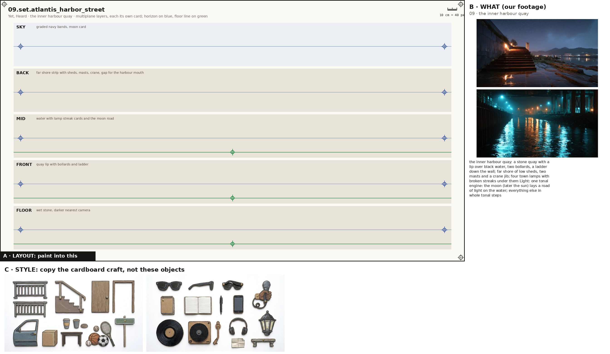
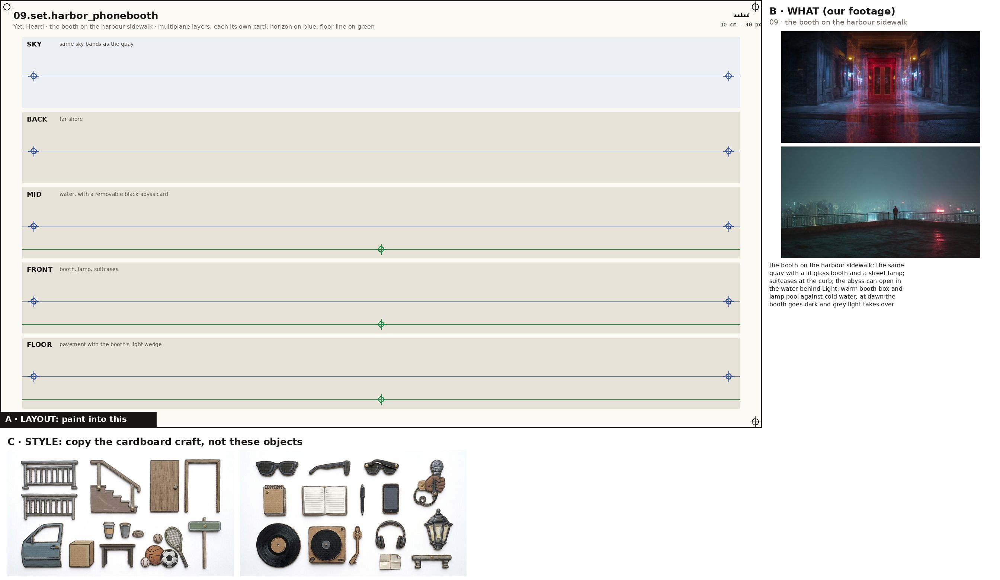
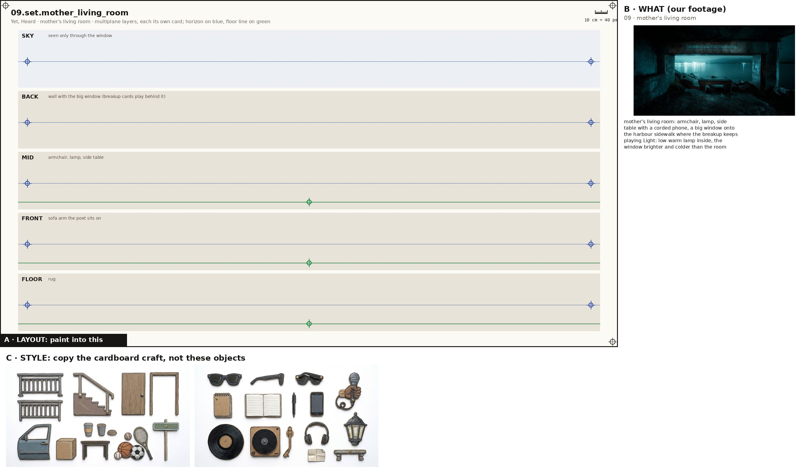
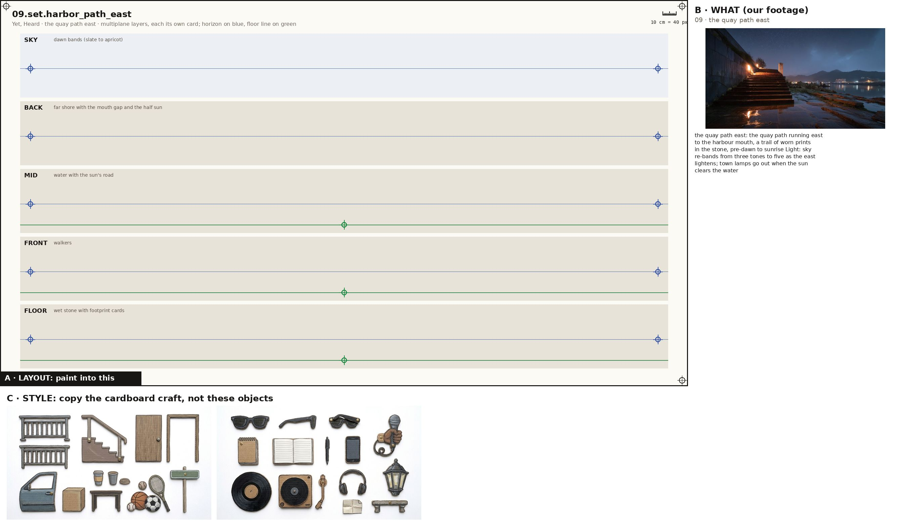
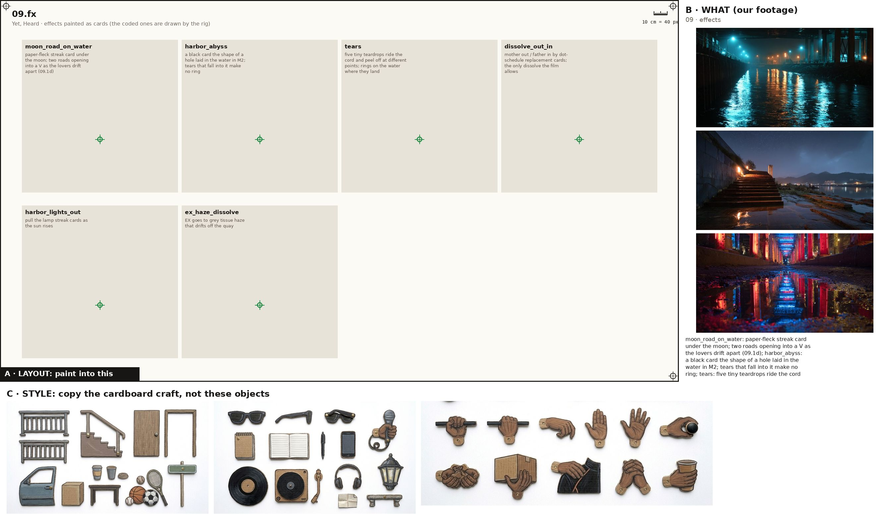

One image + one prompt each. The characters' action sheets are in the cast above; their costume kits are on the character kits page.

Props, every state props
Paint one sheet of cut-out puppet parts for a paper-puppet film, using the attached image. Panel A is the exact layout, panel B is our footage for these props (reference: copy the object, not the photo style), panel C is the style. STYLE (panel C): flat cards cut from corrugated cardboard, gouache with confident ink linework, the flutes faintly showing through the paint, a thin raw kraft-brown cut edge round every card, brass split-pin brads; shot flat-on, even light, no shadows, no perspective. Copy the craft from C, not the clothes in it. WHAT (panel B): the props of the poem 'Yet, Heard', one row each, every state of a prop in its own cell, left to right: the lit phone booth: a glass street booth with a steel frame, a folding door, a lit ceiling panel and a steel wall phone; the only warm box on a cold quay (lit, empty, poet inside, palm on glass, dawn, light off); the call (the cord of light): a dashed, pulsed line between two callers: paper-white against the night sky, ink-dark against the dawn; it bows up to the moon for the lover, sags into the water for the mother (crest at the moon (lover), sagging into the abyss (mother), pulled east (father), gone); the moon: a cream paper disc with three small soft maria and a thin grey rim; the brightest thing in the film until the sun (high over the harbour, gone (the dead hour), settling west behind the walkers); the sun in the harbour mouth: only the part of a disc above the waterline: a half sun sitting in the gap of the far shore. No still fits. (sliver, half up); the two suitcases: POET's black hard-shell roller; EX's worn brown leather case; side by side at their feet by the booth. No still fits. (open, zipped, in hand); the father's footprints: a trail of dark worn shoe prints on wet quay stone, about 70 cm stride, pointing east (already there, stepped into); payphone handset: black steel-armoured handset on a steel cord. No still fits. (at the ear, on the hook); the mother's receiver: cream home receiver on a coiled cord, with a cream rotary desk phone. No still fits. (at her ear, in her lap); mother's armchair: upholstered floral armchair. No still fits. (occupied); folded jacket: the poet's black jacket folded over his forearm. No still fits. (over the arm). Paint each state as a flat cardboard prop card at the size its cell gives, the same object across its row; a brass brad on the green cross (its pivot); where there is a red cross, that is where a hand grips it. LAYOUT (panel A): paint one card inside each grey ghost, in the same place, size and angle, inside its dashed outline; a brass brad exactly on every green cross; each red cross must fall inside that card's rounded end. NEVER draw a pelvis, hip, shorts or briefs card (the thighs end in a rounded seat that tucks under the hem), a sleeveless vest, lace-up boots, or sunglasses painted onto a head. OUTPUT: only the painted cards on a pure white 2048x1152 sheet laid out as panel A. Leave out panels B and C, the crosses, labels, ruler, dashed lines and ghosts.

the club sidewalk set
Paint one sheet of cut-out puppet parts for a paper-puppet film, using the attached image. Panel A is the exact layout, panel B is our footage for this place (reference: copy the place, not the photo style), panel C is the style. STYLE (panel C): flat cards cut from corrugated cardboard, gouache with confident ink linework, the flutes faintly showing through the paint, a thin raw kraft-brown cut edge round every card, brass split-pin brads; shot flat-on, even light, no shadows, no perspective. Copy the craft from C, not the clothes in it. WHAT (panel B): the club sidewalk: wet Atlantis street outside the clubs: neon doorways, power lines, a crowd along the curb, puddles mirroring red and blue Light: neon red and teal spill from doorways, wet reflections on the floor. SHEET: the place as five separate flat cardboard layers, one per band, painted to stack front to back in a multiplane rig: SKY: low teal-grey cloud with wires; BACK: shopfronts and club doors with painted neon; MID: crowd silhouettes; FRONT: two near shoulders that close the gap; FLOOR: black gloss card with red/blue reflections. Each layer is its own card with a clean cut top edge and transparent gaps where the layer behind shows through; keep the horizon on the blue line and the floor on the green line in every band so they register. LAYOUT (panel A): paint one card inside each grey ghost, in the same place, size and angle, inside its dashed outline; a brass brad exactly on every green cross; each red cross must fall inside that card's rounded end. OUTPUT: only the painted cards on a pure white 2048x1152 sheet laid out as panel A. Leave out panels B and C, the crosses, labels, ruler, dashed lines and ghosts.

the inner harbour quay set
Paint one sheet of cut-out puppet parts for a paper-puppet film, using the attached image. Panel A is the exact layout, panel B is our footage for this place (reference: copy the place, not the photo style), panel C is the style. STYLE (panel C): flat cards cut from corrugated cardboard, gouache with confident ink linework, the flutes faintly showing through the paint, a thin raw kraft-brown cut edge round every card, brass split-pin brads; shot flat-on, even light, no shadows, no perspective. Copy the craft from C, not the clothes in it. WHAT (panel B): the inner harbour quay: a stone quay with a lip over black water, two bollards, a ladder down the wall; far shore of low sheds, two masts and a crane jib; four town lamps with broken streaks under them Light: one tonal engine: the moon (later the sun) lays a road of light on the water; everything else in whole tonal steps. SHEET: the place as five separate flat cardboard layers, one per band, painted to stack front to back in a multiplane rig: SKY: graded navy bands, moon card; BACK: far shore strip with sheds, masts, crane, gap for the harbour mouth; MID: water with lamp streak cards and the moon road; FRONT: quay lip with bollards and ladder; FLOOR: wet stone, darker nearest camera. Each layer is its own card with a clean cut top edge and transparent gaps where the layer behind shows through; keep the horizon on the blue line and the floor on the green line in every band so they register. LAYOUT (panel A): paint one card inside each grey ghost, in the same place, size and angle, inside its dashed outline; a brass brad exactly on every green cross; each red cross must fall inside that card's rounded end. OUTPUT: only the painted cards on a pure white 2048x1152 sheet laid out as panel A. Leave out panels B and C, the crosses, labels, ruler, dashed lines and ghosts.

the booth on the harbour sidewalk set
Paint one sheet of cut-out puppet parts for a paper-puppet film, using the attached image. Panel A is the exact layout, panel B is our footage for this place (reference: copy the place, not the photo style), panel C is the style. STYLE (panel C): flat cards cut from corrugated cardboard, gouache with confident ink linework, the flutes faintly showing through the paint, a thin raw kraft-brown cut edge round every card, brass split-pin brads; shot flat-on, even light, no shadows, no perspective. Copy the craft from C, not the clothes in it. WHAT (panel B): the booth on the harbour sidewalk: the same quay with a lit glass booth and a street lamp; suitcases at the curb; the abyss can open in the water behind Light: warm booth box and lamp pool against cold water; at dawn the booth goes dark and grey light takes over. SHEET: the place as five separate flat cardboard layers, one per band, painted to stack front to back in a multiplane rig: SKY: same sky bands as the quay; BACK: far shore; MID: water, with a removable black abyss card; FRONT: booth, lamp, suitcases; FLOOR: pavement with the booth's light wedge. Each layer is its own card with a clean cut top edge and transparent gaps where the layer behind shows through; keep the horizon on the blue line and the floor on the green line in every band so they register. LAYOUT (panel A): paint one card inside each grey ghost, in the same place, size and angle, inside its dashed outline; a brass brad exactly on every green cross; each red cross must fall inside that card's rounded end. OUTPUT: only the painted cards on a pure white 2048x1152 sheet laid out as panel A. Leave out panels B and C, the crosses, labels, ruler, dashed lines and ghosts.

mother's living room set
Paint one sheet of cut-out puppet parts for a paper-puppet film, using the attached image. Panel A is the exact layout, panel B is our footage for this place (reference: copy the place, not the photo style), panel C is the style. STYLE (panel C): flat cards cut from corrugated cardboard, gouache with confident ink linework, the flutes faintly showing through the paint, a thin raw kraft-brown cut edge round every card, brass split-pin brads; shot flat-on, even light, no shadows, no perspective. Copy the craft from C, not the clothes in it. WHAT (panel B): mother's living room: armchair, lamp, side table with a corded phone, a big window onto the harbour sidewalk where the breakup keeps playing Light: low warm lamp inside, the window brighter and colder than the room. SHEET: the place as five separate flat cardboard layers, one per band, painted to stack front to back in a multiplane rig: SKY: seen only through the window; BACK: wall with the big window (breakup cards play behind it); MID: armchair, lamp, side table; FRONT: sofa arm the poet sits on; FLOOR: rug. Each layer is its own card with a clean cut top edge and transparent gaps where the layer behind shows through; keep the horizon on the blue line and the floor on the green line in every band so they register. LAYOUT (panel A): paint one card inside each grey ghost, in the same place, size and angle, inside its dashed outline; a brass brad exactly on every green cross; each red cross must fall inside that card's rounded end. OUTPUT: only the painted cards on a pure white 2048x1152 sheet laid out as panel A. Leave out panels B and C, the crosses, labels, ruler, dashed lines and ghosts.

the quay path east set
Paint one sheet of cut-out puppet parts for a paper-puppet film, using the attached image. Panel A is the exact layout, panel B is our footage for this place (reference: copy the place, not the photo style), panel C is the style. STYLE (panel C): flat cards cut from corrugated cardboard, gouache with confident ink linework, the flutes faintly showing through the paint, a thin raw kraft-brown cut edge round every card, brass split-pin brads; shot flat-on, even light, no shadows, no perspective. Copy the craft from C, not the clothes in it. WHAT (panel B): the quay path east: the quay path running east to the harbour mouth, a trail of worn prints in the stone, pre-dawn to sunrise Light: sky re-bands from three tones to five as the east lightens; town lamps go out when the sun clears the water. SHEET: the place as five separate flat cardboard layers, one per band, painted to stack front to back in a multiplane rig: SKY: dawn bands (slate to apricot); BACK: far shore with the mouth gap and the half sun; MID: water with the sun's road; FRONT: walkers; FLOOR: wet stone with footprint cards. Each layer is its own card with a clean cut top edge and transparent gaps where the layer behind shows through; keep the horizon on the blue line and the floor on the green line in every band so they register. LAYOUT (panel A): paint one card inside each grey ghost, in the same place, size and angle, inside its dashed outline; a brass brad exactly on every green cross; each red cross must fall inside that card's rounded end. OUTPUT: only the painted cards on a pure white 2048x1152 sheet laid out as panel A. Leave out panels B and C, the crosses, labels, ruler, dashed lines and ghosts.

Painted effects fx
Paint one sheet of cut-out puppet parts for a paper-puppet film, using the attached image. Panel A is the exact layout, panel B is our footage for the mood, panel C is the style. STYLE (panel C): flat cards cut from corrugated cardboard, gouache with confident ink linework, the flutes faintly showing through the paint, a thin raw kraft-brown cut edge round every card, brass split-pin brads; shot flat-on, even light, no shadows, no perspective. Copy the craft from C, not the clothes in it. WHAT: the poem's painted effects, one per cell, as flat cardboard cards that a cut-out film moves in front of the camera: moon_road_on_water: paper-fleck streak card under the moon; two roads opening into a V as the lovers drift apart (09.1d); harbor_abyss: a black card the shape of a hole laid in the water in M2; tears that fall into it make no ring; tears: five tiny teardrops ride the cord and peel off at different points; rings on the water where they land; dissolve_out_in: mother out / father in by dot-schedule replacement cards; the only dissolve the film allows; harbor_lights_out: pull the lamp streak cards as the sun rises; ex_haze_dissolve: EX goes to grey tissue haze that drifts off the quay. A brass brad on the green cross of each. LAYOUT (panel A): paint one card inside each grey ghost, in the same place, size and angle, inside its dashed outline; a brass brad exactly on every green cross; each red cross must fall inside that card's rounded end. NEVER draw a pelvis, hip, shorts or briefs card (the thighs end in a rounded seat that tucks under the hem), a sleeveless vest, lace-up boots, or sunglasses painted onto a head. OUTPUT: only the painted cards on a pure white 2048x1152 sheet laid out as panel A. Leave out panels B and C, the crosses, labels, ruler, dashed lines and ghosts.